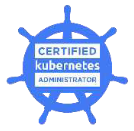
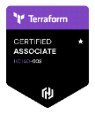
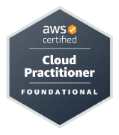
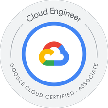

DevOps and cloud automation engineer
I build reliable, automated cloud infrastructure and deployment pipelines. Alongside that, I design practical AI assistants that help small businesses answer customer questions around the clock.
Six years of DevOps, release and deployment engineering in public services and ecommerce, with a focus on releases that are fast, repeatable and safe.
Terraform, Ansible and CI/CD pipelines that make deployments consistent across AWS and Azure environments.
Landing zones, Security Hub findings, monitoring and disaster recovery, so systems stay secure and available.
Chat assistants on AWS that answer from a business's own information. Offered through Lumen Desk.
Four industry certifications across Kubernetes, infrastructure as code and two major clouds.




I began in customer service and technical support, moved into software development and DevOps tooling, and now work in cloud automation at Transurban in Victoria. That start taught me to explain technology plainly, which shapes how I build for customers.
Lumen Desk builds small, honest chat assistants that answer your customers' questions from your own information.